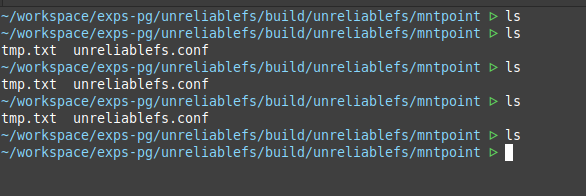
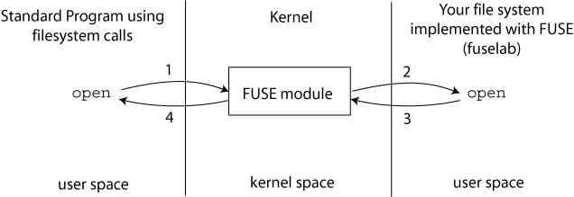
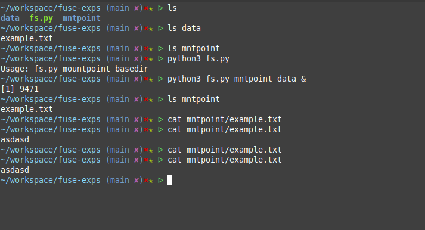
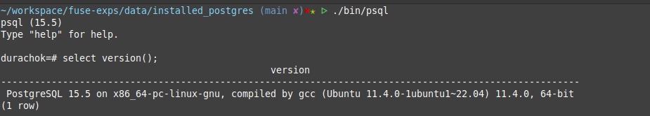
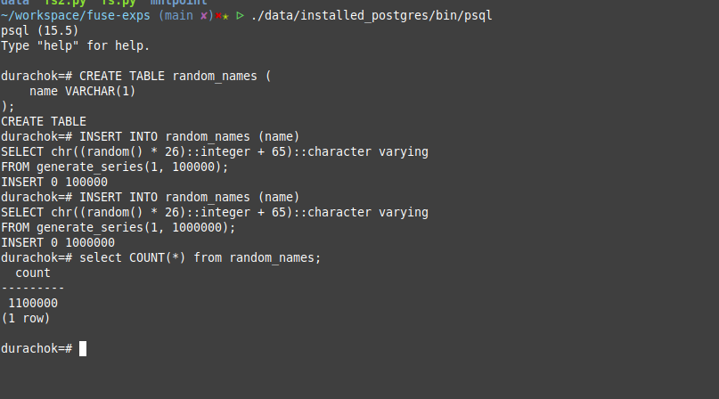
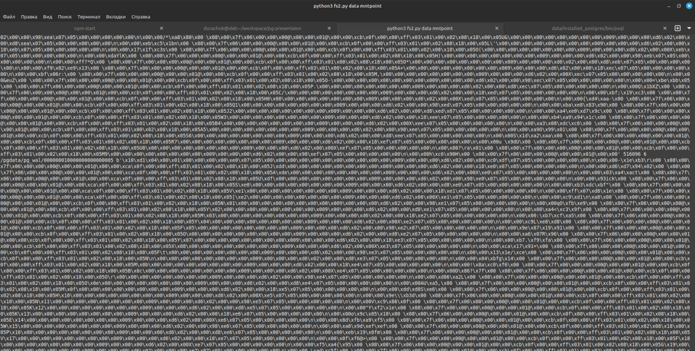
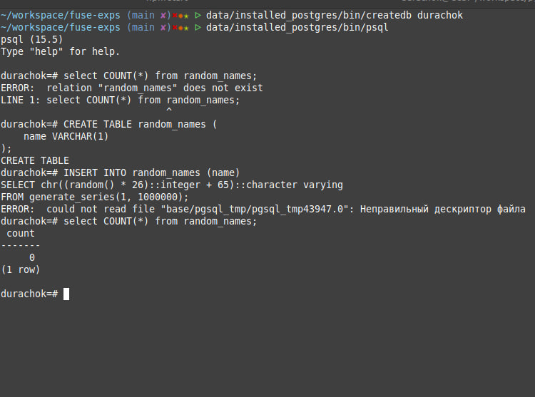

Эмуляция сбоев файловых систем
Кратко о том как работает файловая система

Что можем симулировать?
- Закончились inode 🪹
- Ошибка чтения ❌
- Замедление исполнения операций 🐢 🦥
- Послать SIGKILL в ответ 🤡
| Инструмент | Ссылка/Комменатарий |
|---|---|
| CharybdeFS | github |
| PetardFS | github |
| UnreliableFS | github |
| libeatmydata | github |
| Инструмент | Ссылка/Комменатарий |
|---|---|
| cleancache | github |
| Device Mapper | Kernel docs |
| QEMU | github |
| sysrq | github |
| Инструмент | Ссылка/Комменатарий |
|---|---|
| Linux kernel fault injection capabilities infrastructure | Kernel docs |
| libfiu | Link |
| Linux kernel notifier fault injection | github |
| BSOD | github |
Простой пример работы UnreliableFS
Установка UnreliableFS
$ git clone git@github.com:ligurio/unreliablefs.git
$ cmake -S . -B build -DCMAKE_BUILD_TYPE=Debug
$ cmake --build build --parallel
$ mkdir mntpoint bsdir
$ cat << EOF > /tmp/fs/unreliablefs.conf
[errinj_noop]
op_regexp = read
path_regexp = .*
probability = 30
EOF
$ ./unreliablefs mntpoint -basedir=bsdir -seed=1618680646 -f
Проверка работы UnreliableFS
Поддерживаемые операции для иньекциии UnreliableFS
FUSE - FileSystem in USER space
Поднимаем свой Fuse на коленках
#!/usr/bin/env python
import os
import sys
import random
from fuse import FUSE, FuseOSError, Operations
class SimpleFS(Operations):
def __init__(self, basedir):
self.basedir = basedir
def getattr(self, path, fh=None):
full_path = self._full_path(path)
try:
st = os.lstat(full_path)
return dict((key, getattr(st, key)) for key in ('st_atime', 'st_ctime',
'st_gid', 'st_mode', 'st_mtime', 'st_nlink', 'st_size', 'st_uid'))
except FileNotFoundError:
raise FuseOSError(2)
def readdir(self, path, fh):
full_path = self._full_path(path)
try:
dirents = ['.', '..'] + [f.name for f in os.scandir(full_path)]
for r in dirents:
yield r
except FileNotFoundError:
raise FuseOSError(2)
def read(self, path, size, offset, fh):
full_path = self._full_path(path)
try:
with open(full_path, 'rb') as f:
data = f.read()
# 50% probability of no-op
if random.random() < 0.5:
return b'' # Return empty data as a no-op
return data[offset:offset + size]
except FileNotFoundError:
raise FuseOSError(2)
def write(self, path, data, offset, fh):
full_path = self._full_path(path)
try:
with open(full_path, 'r+b') as f:
f.seek(offset)
f.write(data)
return len(data)
except FileNotFoundError:
raise FuseOSError(2)
def mkdir(self, path, mode):
full_path = self._full_path(path)
try:
os.mkdir(full_path, mode)
except FileExistsError:
raise FuseOSError(17)
except FileNotFoundError:
raise FuseOSError(2)
def rmdir(self, path):
full_path = self._full_path(path)
try:
os.rmdir(full_path)
except FileNotFoundError:
raise FuseOSError(2)
def unlink(self, path):
full_path = self._full_path(path)
try:
os.unlink(full_path)
except FileNotFoundError:
raise FuseOSError(2)
def _full_path(self, partial):
if partial.startswith("/"):
partial = partial[1:]
path = os.path.join(self.basedir, partial)
return path
if __name__ == '__main__':
if len(sys.argv) != 3:
print("Usage: {} mountpoint basedir".format(sys.argv[0]))
sys.exit(1)
mountpoint = sys.argv[1]
basedir = sys.argv[2]
fuse = FUSE(SimpleFS(basedir), mountpoint, foreground=True)
Запустим нашу файлуху
Добавим все методы и чуть отрефакторим
#!/usr/bin/env python
from __future__ import with_statement
import os
import sys
import random
import errno
from fuse import FUSE, FuseOSError, Operations, fuse_get_context
class Passthrough(Operations):
def __init__(self, root):
self.root = root
# Helpers
# =======
def _full_path(self, partial):
if partial.startswith("/"):
partial = partial[1:]
path = os.path.join(self.root, partial)
return path
# Filesystem methods
# ==================
def access(self, path, mode):
full_path = self._full_path(path)
if not os.access(full_path, mode):
raise FuseOSError(errno.EACCES)
def chmod(self, path, mode):
full_path = self._full_path(path)
return os.chmod(full_path, mode)
def chown(self, path, uid, gid):
full_path = self._full_path(path)
return os.chown(full_path, uid, gid)
def getattr(self, path, fh=None):
full_path = self._full_path(path)
st = os.lstat(full_path)
return dict((key, getattr(st, key)) for key in ('st_atime', 'st_ctime',
'st_gid', 'st_mode', 'st_mtime', 'st_nlink', 'st_size', 'st_uid'))
def readdir(self, path, fh):
full_path = self._full_path(path)
dirents = ['.', '..']
if os.path.isdir(full_path):
dirents.extend(os.listdir(full_path))
for r in dirents:
yield r
def readlink(self, path):
pathname = os.readlink(self._full_path(path))
if pathname.startswith("/"):
# Path name is absolute, sanitize it.
return os.path.relpath(pathname, self.root)
else:
return pathname
def mknod(self, path, mode, dev):
return os.mknod(self._full_path(path), mode, dev)
def rmdir(self, path):
full_path = self._full_path(path)
return os.rmdir(full_path)
def mkdir(self, path, mode):
return os.mkdir(self._full_path(path), mode)
def statfs(self, path):
full_path = self._full_path(path)
stv = os.statvfs(full_path)
return dict((key, getattr(stv, key)) for key in ('f_bavail', 'f_bfree',
'f_blocks', 'f_bsize', 'f_favail', 'f_ffree', 'f_files', 'f_flag',
'f_frsize', 'f_namemax'))
def unlink(self, path):
return os.unlink(self._full_path(path))
def symlink(self, name, target):
return os.symlink(target, self._full_path(name))
def rename(self, old, new):
return os.rename(self._full_path(old), self._full_path(new))
def link(self, target, name):
return os.link(self._full_path(name), self._full_path(target))
def utimens(self, path, times=None):
return os.utime(self._full_path(path), times)
# File methods
# ============
def open(self, path, flags):
full_path = self._full_path(path)
return os.open(full_path, flags)
def create(self, path, mode, fi=None):
uid, gid, pid = fuse_get_context()
full_path = self._full_path(path)
fd = os.open(full_path, os.O_WRONLY | os.O_CREAT, mode)
os.chown(full_path,uid,gid) #chown to context uid & gid
return fd
def read(self, path, length, offset, fh):
# Add a read no-op operation with 50% probability
if random.random() < 0.5:
return b'' # Return an empty byte string as a no-op
else:
os.lseek(fh, offset, os.SEEK_SET)
return os.read(fh, length)
def write(self, path, buf, offset, fh):
os.lseek(fh, offset, os.SEEK_SET)
return os.write(fh, buf)
def truncate(self, path, length, fh=None):
full_path = self._full_path(path)
with open(full_path, 'r+') as f:
f.truncate(length)
def flush(self, path, fh):
return os.fsync(fh)
def release(self, path, fh):
return os.close(fh)
def fsync(self, path, fdatasync, fh):
return self.flush(path, fh)
def main(mountpoint, root):
FUSE(Passthrough(root), mountpoint, nothreads=True, foreground=True, allow_other=True)
if __name__ == '__main__':
main(sys.argv[2], sys.argv[1])
Поставим Postgres из исходников
Перепишем чуть метод read
def read(self, path, length, offset, fh):
print(path, length, offset, fh)
if re.match(r'/installed_postgres/data/.*', path) and random.random() < 0.5:
return b'' # Return an empty byte string as a no-op
else:
os.lseek(fh, offset, os.SEEK_SET)
return os.read(fh, length)
Postgres работает
Запускаем файловую систему
Постгресу пофиг :C
Т.е я провел эксперимент
сделал write внутри basedir не логирует
сделал write того же файла внутри mntdir - логирует
Возникает вопрос как заставить postgres делать это через mntdir?
Сам эксперимент
$ echo "test str" > data/example.txt
$ echo "test str 2" > mntpoint/example.txt
Логи файлухи:
$ python3 fs2.py data mntpoint
/example.txt b'test str 2\n' 0 4
Понял чтобы все заработало надо создавать директорию pgdata именно внутри mntpoint и на нее запускать pginit
Логи от Postgres полетели )
Не вставилось ((
